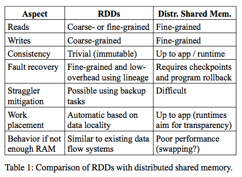
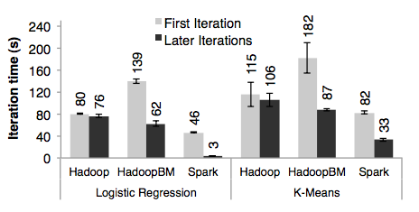
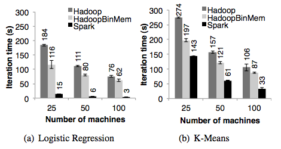
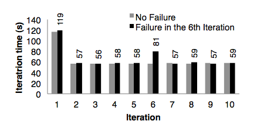

Tutorial
Tutorial
Demo demo demo things
Introduction
Spark is a relatively new, general-purpose cluster computing software system. It has APIs in Java, Scala, and Python, allowing for a wide range of options in terms of programming languages.
A Spark application utilizes a driver program that runs the main function. The driver also coordinates the parallel efforts of the child programs on the cluster. Each individual node on the cluster consists of multiple resilient distributed datasets (RDDs) that are the foundation of Spark (which we will discuss in greater detail). Simply put, RDDs enable users to parallelize their driver program, or run operations on an external dataset (of which anything using a Hadoop InputFormat is supported). The user can also specify that an RDD persist in memory, which greatly speeds up its parallel processing (assuming the memory is large enough to accommodate the RDD). They are also very fault tolerant, which is a key feature for any distributed computing system (as we have already established with MapReduce).
Spark also uses shared variables that can be accessed from the different nodes. Normally, local variables in a parallelized function are copied over onto the different nodes. On certain occasions, special shared variables may greatly optimize a parallel operation. These come in two flavors:
- Broadcast Variables: These are variables that are cached in memory on each node that uses it. As they are read-only, there is no need to worry about data mismatchs between the different copies over a period of time. This will also ensure that new nodes will receive the same value if more nodes are required for the driver.
- Accumulators: These are variables that will only ever increase in value. This makes it simple to write to from the cluster nodes, as they never need to confirm the original value before writing to it. Only the driver program is able to read the accumulated value.
Deployment to a cluster is typically accomplished by packaging the program into a JAR file (when using Java
or Scala), then submitting it using the ./bin/spark-submit script.
Setup
There are two basic ways to set up a Spark environment: pre-built or source code.
Download
To download Spark, visit http://spark.apache.org/downloads.html
Pre-Built
Select a pre-built package from the download section, and download.
Source Code
After downloading the source code, run
export MAVEN_OPTS="-Xmx2g -XX:MaxPermSize=512M -XX:ReservedCodeCacheSize=512m"
Then run the build by executing the code
mvn -DskipTests clean package
Test Environment
After the build is successful, you may test your environment by running
./bin/run-example SparkPi 10
Keep in mind
Spark build is best when using scala 2.10.X
The latest scala will cause complications and may not build.
Also, building Spark requires Maven and Java.
Resilient Distributed Datasets (RDDs)
As mentioned before, Spark is implemented on top of RDDs. These RDDs are key to understanding how Spark is able to claim more efficient memory management while still performing as well as the other big distributed systems. The basic idea is that RDDs keep track of coarse-grained transformations that have been applied to it, rather than fine-grained operations to its shared state. That is to say, a fine-grained operation would involve updating specific cells in a shared table, which would involve propagating this change across all other nodes that use it so that it can be recovered in the event of failure. A coarse-grained approach involves using one operation to update most, if not all, elements. This allows the driver to simply keep track of all transformations utilized over time, allowing an RDD to easily rebuild from failure by checking other RDDs. In spite of this potential loss of generality, RDDs are still very powerful and flexible enough to handle the majority of parallelizable computations.
Formally speaking, an RDD is actually immutable - any modifications to an RDD are actually a result of a transformation creating a new RDD after running a function through a group of elements in the old one. In fact, RDDs may not even need to stay in memory. It keeps track of how it was derived from other data through the aforementioned transformations, known as its lineage, and is able to compute specific partitions of itself on the fly. The user can also specify which RDDs may be queried more often, and therefore should be stored in memory instead of being represented as a series of transformations. This is known as persistence, which greatly speeds up execution if a user knows beforehand that a certain dataset will be referenced multiple times. An RDD can also be partitioned across multiple machines, which is another aspect of RDDs that can be set by the user.
RDD Operations
There are two kinds of operations one can perform on RDDs. The first is a transformation, which modifies
an existing dataset, and the second is an action, which will compute a value from a dataset and return
it to the driver program. The classic transformation and action example would be map and
reduce: map takes a function and applies it to every element in a dataset, which is how
a transformation works. reduce takes a dataset and aggregates it through a function - this is
analogous to how an action operates and passes its value on to the driver program.
Transformations in Spark are lazy, which means that the dataset is not modified by the transformations immediately. The transformation sequence is saved and only applied when an action requests the value for the driver program.
RDD Advantages

Table 1 lists out a quick summary of how an RDD-based system stacks up with a generic Distributed Shared Memory (DSM) system. Most importantly, it shows how the fault tolerance of RDDs can be so much more efficient than that of a DSM by using lineage to track its RDDs. This prevents the necessity of periodic checkpoints and required full-system rollbacks when critical nodes fail, which are typical fault recovery methods for DSMs. In addition, RDDs are capable of running extra copies of slow tasks, similar to how MapReduce deals with stragglers. In DSM, two copies of the same task would be accessing the same memory locations, creating contention and potential data inconsistencies across the board.
Though RDDs can be generalized to address a wide range of parallelized problems, it is also because most distributed systems today follow a MapReduce-type of framework, in which one function is applied over a large batch of elements. In the event that fine grained updates are required, RDDs would no longer be a practical choice. An example of such include a storage system over multiple users for a web app, in which it would not be practical to assume that every user would enjoy having the contents of their storage modified to match everyone else's.
A Little About Spark Map, Reduce, and Filter
Spark Shell And WordCount
App Deployment and PiEstimator
App Deployment
Now that we know how to use Spark with the shell, it's useful to look at a way to deploy a Spark application which can be reused. We will use Spark's "SimpleApp" to demonstrate.
/* SimpleApp.scala */
import org.apache.spark.SparkContext
import org.apache.spark.SparkContext._
import org.apache.spark.SparkConf
object SimpleApp {
def main(args: Array[String]) {
val logFile = "README.md" // Should be some file on your system
val conf = new SparkConf().setAppName("Simple Application")
val sc = new SparkContext(conf)
val logData = sc.textFile(logFile, 2).cache()
val numAs = logData.filter(line => line.contains("a")).count()
val numBs = logData.filter(line => line.contains("b")).count()
println("Lines with a: %s, Lines with b: %s".format(numAs, numBs))
}
}
You can use any text file, and this application will count the number of As and the number of Bs in the file.
SparkConf is a configuration requirement to make sure that the application will be using Spark. To create the sbt configuration file, simple.sbt, use the following:
name := "Simple Project"
version := "1.0"
scalaVersion := "2.10.4"
libraryDependencies += "org.apache.spark" %% "spark-core" % "1.2.0"
Finally, the following steps will deploy and run the application.
# Your directory layout should look like this
$ find .
.
./simple.sbt
./src
./src/main
./src/main/scala
./src/main/scala/SimpleApp.scala
# Package a jar containing your application
$ sbt package
...
[info] Packaging {..}/{..}/target/scala-2.10/simple-project_2.10-1.0.jar
# Use spark-submit to run your application
$ YOUR_SPARK_HOME/bin/spark-submit \
--class "SimpleApp" \
--master local[4] \
target/scala-2.10/simple-project_2.10-1.0.jar
...
Lines with a: 46, Lines with b: 23
Pi Estimator
Spark comes with a sample pi estimator to demonstrate and to test your Spark environment.
Take a look at the sample code.
package org.apache.spark.examples
import scala.math.random
import org.apache.spark._
object SparkPi {
def main(args: Array[String]) {
val conf = new SparkConf().setAppName("Spark Pi")
val spark = new SparkContext(conf)
val slices = if (args.length > 0) args(0).toInt else 2
val n = math.min(100000L * slices, Int.MaxValue).toInt // avoid overflow
val count = spark.parallelize(1 until n, slices).map { i =>
val x = random * 2 - 1
val y = random * 2 - 1
if (x*x + y*y < 1) 1 else 0
}.reduce(_ + _)
println("Pi is roughly " + 4.0 * count / n)
spark.stop()
}
}
Spark supports Python, Java, and Scala. But we will be using Scala throughout our tutorial.
From this example, you can see that Spark supports standard library imports. This is also true for Java. For this Pi Estimator, the math library has been imported.
Diving into the code, the first two objects created are the configuration and the spark context. The Spark context is the object to use to perform Spark functions.
As you can see, scala allows for a Javascript style chaining of functions. And you can get a list of actions and transformations in the API or find the most frequently used actions and transformations in the programming guide here.
The parallelize transformation takes the given data and prepares it for parallel operation on the cluster.
Finally, the map and reduce algorithms are applied, and the result is printed.
PageRank
How Spark Stacks Up
RDDs were first proposed in a paper published by UC Berkeley. There, they describe how they implements these resilient datasets on top of Spark, which have now become an integral part of Spark itself. The researchers were also able to show that Spark can run up to 20 times faster than Hadoop for certain iterative applications, and can scan a 1 TB dataset wth only 5 - 7 seconds of latency. Fault recovery was noticeably efficient, as Spark is able to recover just by building the failed partitions. Specific examples are as follow:
Iterative Machine Learning Algorithm Evaluation
The authors compared their RDDs in Spark against the standard Hadoop and a Hadoop deployment known as HadoopBinMem (which converts text data into binary after the initial iteration). They implemented two such machine learning algorithms, one for a logistic regression and the other for k-means. Dataset sizes were 100 GB on clusters of 25 - 100 machines. While the k-means algorithm involves a lot of computation, the regression is more sensitive to I/O and other kinds of overhead. These are qualities that will be taken into consideration when evaluating the results.

This graph depicts the time difference between the initial iteration of each system and the average of subsequent iterations thereafter.

This graph only shows the average running time of the subsequent iterations, but compares the performance of each one over the different numbers of machines used.
Fault Recovery Evaluation

To test how Spark performed in the event of failure, the authors introduced a failure in the 6th iteration when running the k-means algorithm. The graph shows that while Spark did have to compensate for the sudden failure, it was able to recover within a meaningful amount of time and continue the successive iterations with no problem. This is because the other machines were able to reconstruct the downed RDD through its lineage, and did not have to resort to rolling back to a previous state and restarting several iterations (as would typically be the case for a checkpoint-based fault tolerance mechanism, depending on how often checkpoints were made).
The paper and all the relevant figures used in this tutorial can be found here. Further examples and implementation details are also found in that paper.